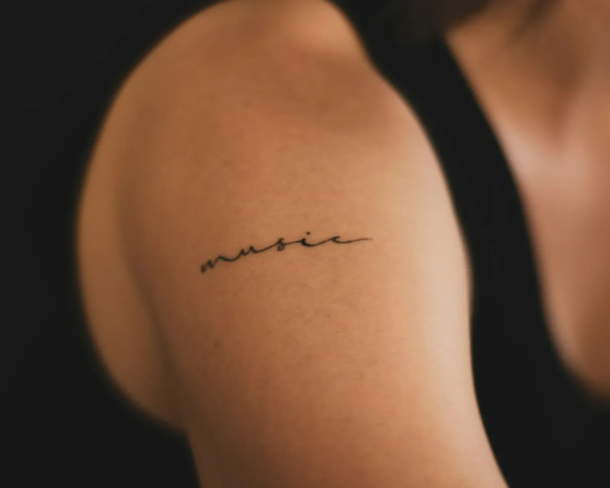
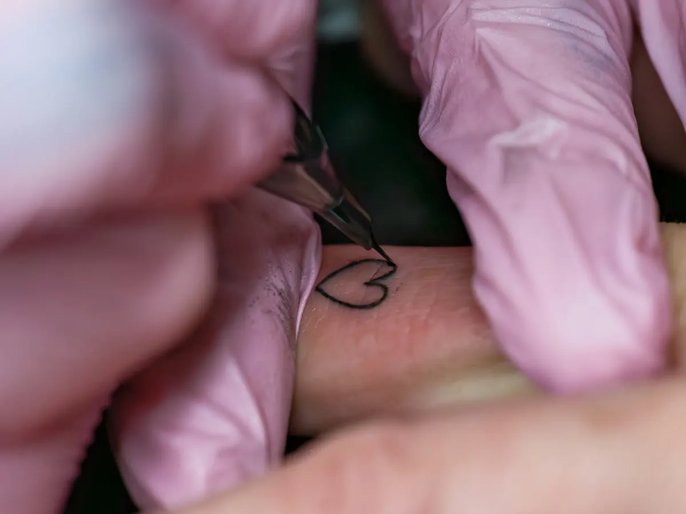
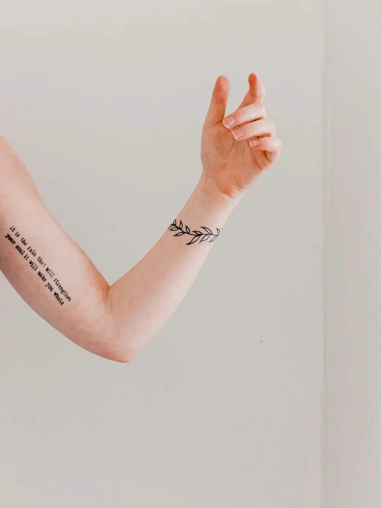
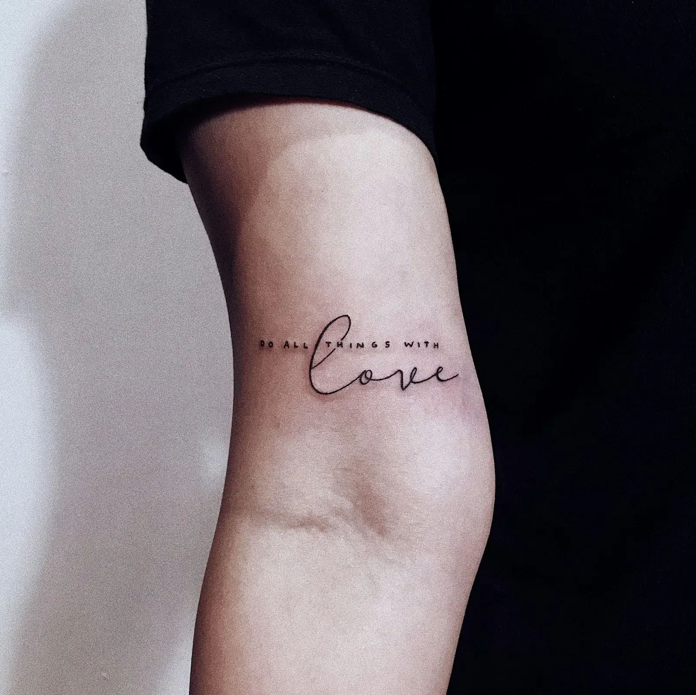
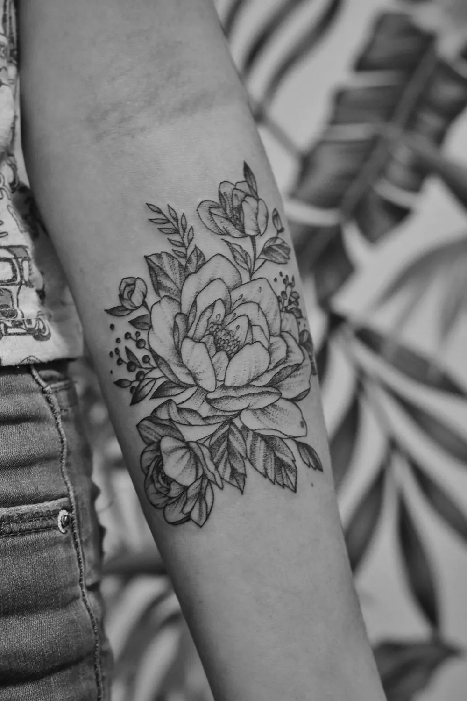
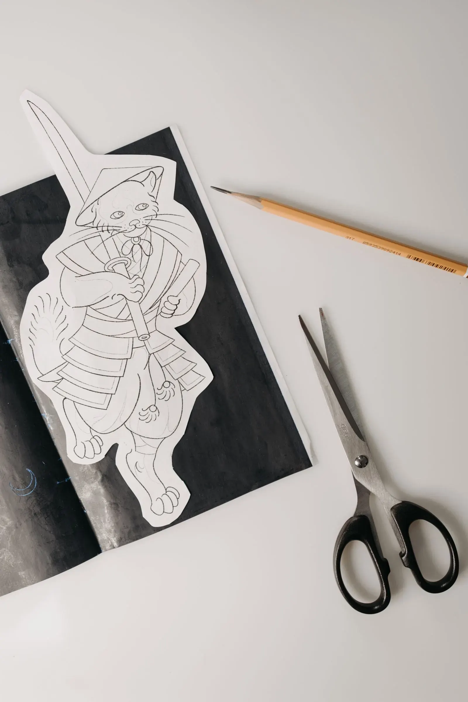
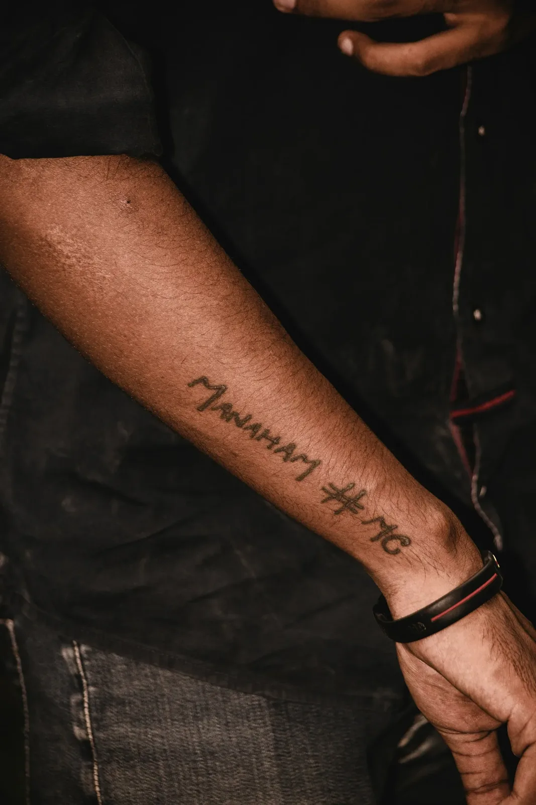
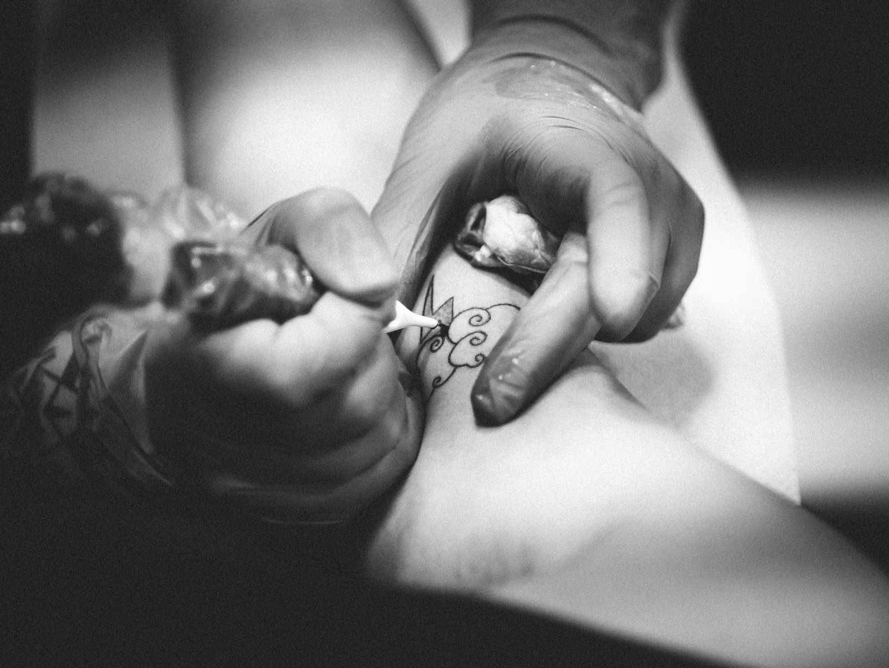

4,9
21 reviews op Google

zelfs op een vinger
TattooFine line en lettering
Elke lijn telt.
Fijne lijnen, letters en kleine tekeningen, met een persoonlijke aanpak. Stuur Eline je idee, dan bekijken jullie het samen.
4,9 op Google uit 21 reviews
Het werk
Klein, fijn en van jou
Een naam, een datum, een bloem in lijn. Hoe kleiner de tattoo, hoe meer elk detail moet kloppen.





Nog niet zeker hoe groot of waar? Stuur een foto of een paar woorden. Je hoeft niet alles al te weten!
Stuur je idee"Heel mooi en fijn! Een kei in haar vak! Heel perfectionistisch, ik ben heel tevreden!"Review op Google
"Persoonlijke aanpak, vriendelijke dame. Levert prachtig werk af."Review op Google
"Super vriendelijk! Heel tevreden over het resultaat!! Ik kom zeker terug ;)"Review op Google
Contact
Heb je al een idee? vertel het gerust
Stuur het via WhatsApp, met een foto of een voorbeeld als je dat hebt. Liever eerst even bellen kan ook.
Geluveldplaats 28980 Zonnebeke
Plan je route
Plan je route

rustig en proper